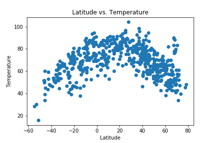

Summary: Latitude vs. X

This project utilizes the Open Weather Map API and a python script in order to retrieve data from 500+ cities from across the world.
Each city varies in distance from the equator.
After assembling the dataset from the Open Weather Map API, matplotlib
was implemented in order to plot various relationships between weather and latitude. This dashboard focuses on temperature,
cloudiness, windspeed, and humidity. Additionally, the source data used to create these visualizations is included in this site.